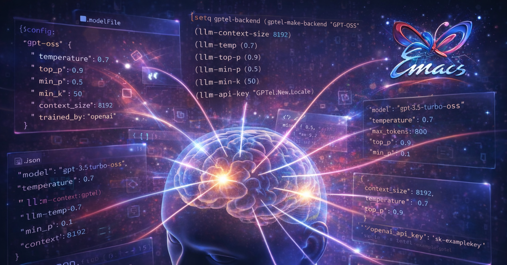

Oi, pessoal. Faz um bom tempo que não posto nada aqui. Como sempre, eu ando extremamente ocupado. Mas eu estou tentando buscar algum tempo pra falar com vocês com mais frequência, porque LLMs e IA generativa em geral está mudando absolutamente todo dia! Mesmo no mês de maio teve muito lançamento interessante, e eu não falei nada no meu blog.
O intuito desse post é falar a respeito de como todo o meu fleet de LLMs que uso para projetos pessoais MUDOU, e inclusive eu não necessariamente uso as mesmas ferramentas e soluções que falei com vocês no post anterior. Eu disse que traria mais informações sobre meu uso, e isso acabou ficando travado em rascunhos de posts que nunca concluí.
A questão é que as LLMs que uso no meu dia-a-dia mudaram RADICALMENTE. E com essa atualização, vou trazer pra vocês as mudanças e melhorias que fiz no meu workflow.
Tudo mudou
A primeira coisa que preciso dizer a vocês é que todo o meu workflow mudou completamente. A minha forma de usar LLMs passou de ter Ollama rodando localmente e um script bash para um ecossistema completamente diferente envolvendo agentes, orquestração de modelos, inferência com meu modesto hardware, e… uso da Cloud da Ollama, que é paga, mas que agora faz parte do meu dia-a-dia.
Além disso, o script bash (então chamado ask-ai), hoje, tornou-se um projeto
bem-delineado de um novo harness para usar LLMs, que estou evoluindo aos poucos.